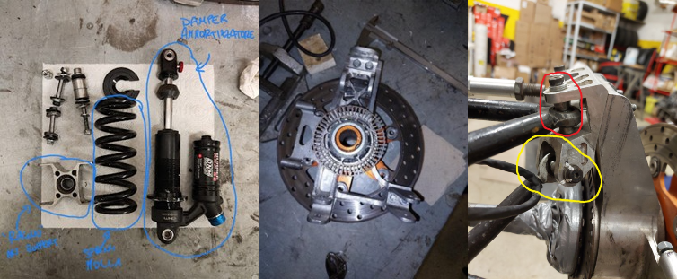

ETH Zürich | June 2025 – August 2025
UniNa Corse is the University of Naples racing team, competing in Formula Student. I joined the team during my first semester of my Bachelor's (11/2021 - 09/2022) as a member of the Vehicle Dynamics Division.
In this team, I gained experience in different fields of mechanics. The team focused on both the dynamic performance of the car (telemetry analysis, dynamic modeling) and the structural integrity of the components that are part of the wheel assembly.
Initially, I primarily focused on the telemetry analysis of the data we collected during tests. I wrote several Matlab functions to extract dynamic functions from the raw data.
I also dedicated time to managing the 3D model in PTC Creo of the wheel assembly, resolving issues and updating older parts of the model.
A portion of the team was dedicated to the design of the new hub and hub carrier. My specific contribution involved creating 2D drawings for manufacturing. This task was particularly time-consuming due to the precise definition of tolerances between the hub/bearing and bearing/hub carrier. Given that bearings are not rigid and possess inherent backlash, we relied on producer guidelines, which relate to the maximum torque for specific applications. After reviewing relevant literature and comparing it with available online resources, my colleague and I successfully determined the appropriate tolerances.
I also contributed to the assembly of the car by working weekly in our box to mount the main components and prepare the car for the competitions in Italy (Varano de' Melegari) and Germany (Hockenheimring).
